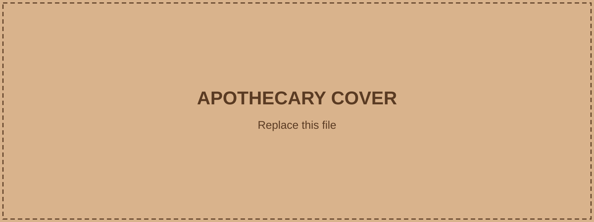

The Apothecary ✓
Verona, CA · 247 friends
Herbalist. Healer. Discreet provider.
Fresh desert lavender in today. Good for the nerves, the sleep, and the heat that won’t let go. 🌿
The market will be closed this afternoon for a private order. Regular hours tomorrow. Take care of yourselves out there. The desert shows no mercy. 🌵
Private order? Now you have me curious.
Like · Reply · 2 daysAbout The Apothecary
Overview
Work: Apothecary & Remedies
Lives in: Verona, CA
From: Verona, CA
Relationship: Single
Joined TownSquare: 2019
Bio
Herbalist. Healer. Discreet provider. The Apothecary keeps a small shop serving the ordinary aches, sleepless nights, desert stings, private ailments, and occasional unusual requests of Verona.
“Plants know what humans forget.”
Work
Owner: Apothecary & Remedies
Specialties: herbs, tinctures, balms, tonics, sleep remedies, and custom preparations.
Hours: Open most days. Closed when the work requires discretion.
Details
🌿 Trusts plants more than politics.
☕ Prefers tea after sunset.
🌵 Knows what survives in the Mojave and why.
Friends
Photos
These five placeholders are ready for the real Apothecary gallery images.
Videos
TownSquare Video Placeholder
Future in-world video, reel, or shop demonstration can live here.Timeline
2019 · Joined TownSquare.
2024 · Expanded the shop’s desert herb collection.
2026 · Still answering unusual requests without asking too many questions.
Recent Activity
Liked Friar Lawrence’s post.
Became friends with Romeo Montague.
Commented on Verona Market’s photo.
Save me a bundle. I may have a use for it.
Like · Reply · 7 hrsYou always do.
Like · Reply · 6 hrs